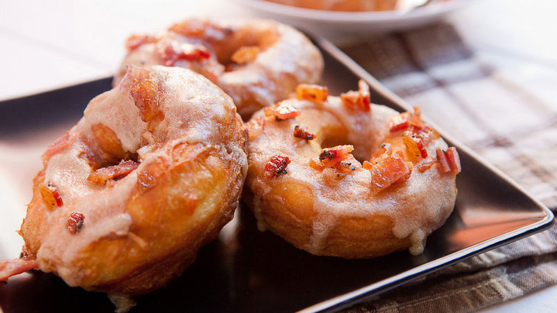

Maple bacon donut is an American invention that is commonly served for breakfast or as a dessert. The simple meal consists of a donut that is glazed with maple syrup and topped with a few slices of bacon. Today, there are various versions of this unusual breakfast item throughout the United States, and it is especially popular in Nebraska, California, and Oregon.
Meal prep time : 2 hours 40 minutes
Servings : 8